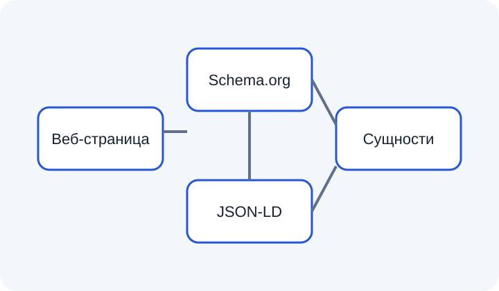

Schema.org
Общий словарь типов и свойств для описания сущностей в интернете.
ИзучитьКраткое введение в Schema.org, JSON-LD и структурированные данные.
Веб-страница понятна человеку благодаря заголовкам, тексту и изображениям. Структурированные данные позволяют дополнительно описать сущности и их свойства в машиночитаемом виде.
